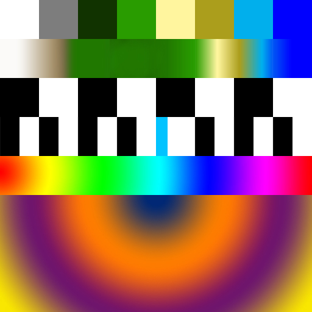
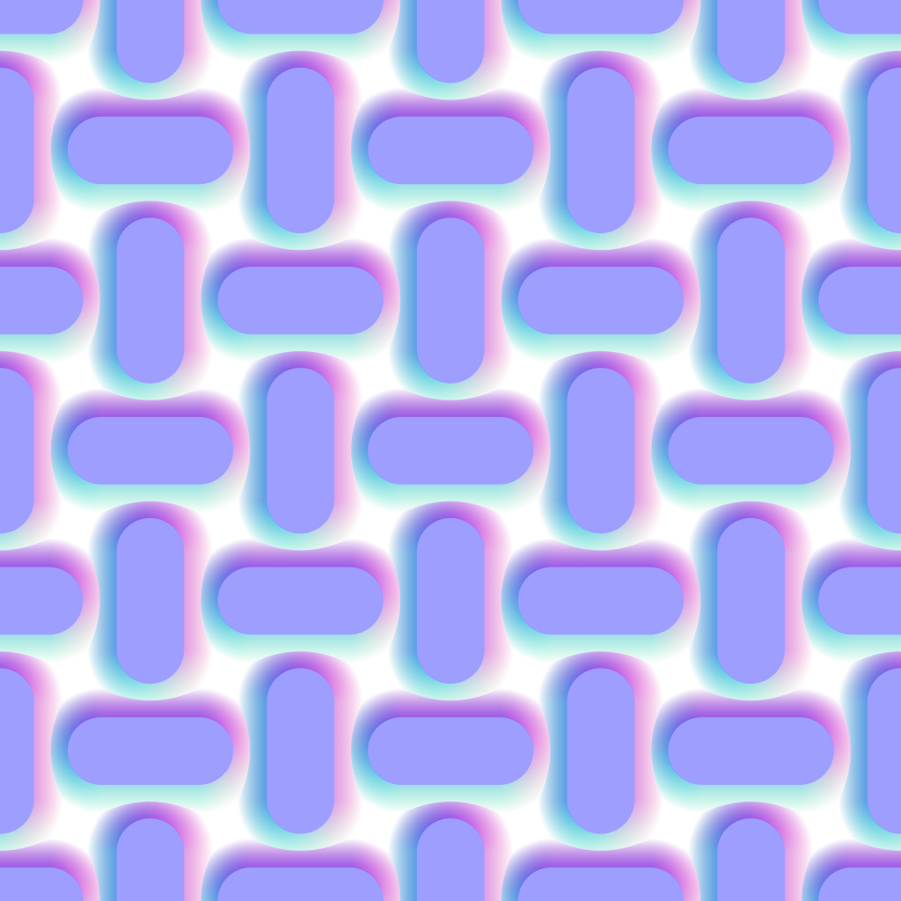
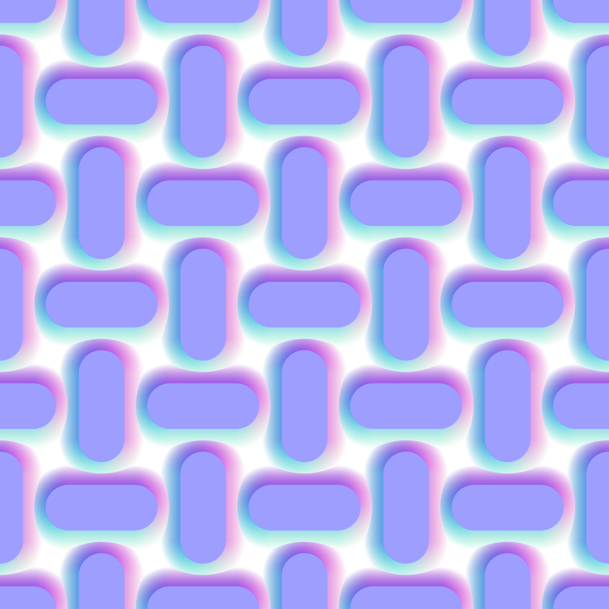

Working with Textures
Overview
Using textures as image and data sources in shaders.
Tools
WebGL
Working With Textures
Today we work with textures! We’ll start by adding texture loading to the from-scratch WebGL demo we looked at last week. Then we’ll look at several common ways textures are used as images and data sources in shaders.
GL doesn’t have any concpet of images vs data sources. Textures are textures. I think it is helpful to think about textures in both ways though, depending on context.
Hello, Shaders! Broken Textures
Loading Textures
Setup:
- Load/Generate Image data.
- allocate -
createTexture() - bind the texture to active unit -
bindTexture() - upload data -
texImage2D() - configure filtering and wraping -
texParameteri()
Draw:
- select the active texture unit -
activeTexture() - bind the texture to active unit -
bindTexture() - store texture unit id in glsl sampler2D -
gl.uniform1i()
Loading is Asynchronous
const image = new Image();
image.onload = function () {
...
gl.texImage2D(...);
...
};
image.crossOrigin = ""; // ask for CORS permission
image.src = url;
Mipmapping

Powers of 2
WebGL 1 only supports mipmapping when textures dimensions to be powers of two.
WebGL 1 also requires wrapping to be CLAMP_TO_EDGE for NPOT textures.
WebGL supports NPOT textures fully. Its still very common to use power of two textures.
I often use square power-of-two images for assests. I also often use just numbers, letters, and underscores in file names. A lot of the times you don’t have to, but if you do it will work more places.b
TEXTURE_WRAP_S + TEXTURE_WRAP_T
- CLAMP_TO_EDGE
- MIRRORED_REPEAT
- REPEAT
TEXTURE_MIN_FILTER
- LINEAR
- NEAREST
- NEAREST_MIPMAP_NEAREST
- LINEAR_MIPMAP_NEAREST
- NEAREST_MIPMAP_LINEAR
- LINEAR_MIPMAP_LINEAR.
TEXTURE_MAG_FILTER
- LINEAR
- NEAREST
Textures as Images
The following examples use this image texture.
01_texture/
loading textures wrapping filtering texture2D mipmaps
02_color/
color arithmetic
03_blur/
box blur gaussian blur
04_emboss/
Convolution Explorer Jam3/glsl-fast-gaussian-blur Wikipedia: Kernel Image Processing
Textures as Data
The following examples use these data textures.

 
